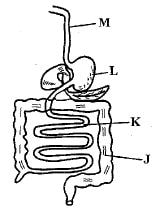
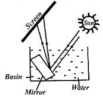
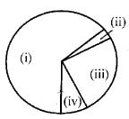
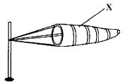
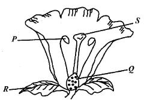
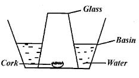

1. Which one of the following is a stem tuber ?

2. What is the CORRECT names of the labelled parts? J, K, L, M respectively
3. In which order do the colours of a rainbow appear, from the bottom to the top?
4. Which forms of energy do not require a medium to be transferred from one point to another?
5. The exchange of food nutrients and oxygen from the mother’s blood to the foetus’ blood occurs through the?
6. The removal of waste products produced by different body organs is called?
7. Which one of the following diseases has no cure?
8. Which one of the following pairs consists of animals with webbed feet for swimming?
9. Std 6 pupils at Griffins School made a set up to investigate a certain aspects of light as shown below.

10. Below is a feeding relationship representing a food chain.
11. In which method of grazing are the animals fed mainly on fodder crops?
12. Which method of preserving food does NOT dehydrate food?
13. The scum seen on hard water after using a bar of soap to wash is formed by?
14. The component of air that is used in making billboards in the pie chart below is represented by?

15. Which of the following pairs shows recreational uses of water ONLY?
16. Which pairs of non-living components of the environment are used by animals directly?
17. Which one of the following is a safety measure to avoid being struck by lightning?
18. Which one of the following parts of human breathing system are both used to filter and moisten the air?
19. A patient with blood in the stool is likely to have?
20. Which one of the following is NOT a method of conserving soil?
21. The process of changing a liquid into gas is known as?
22. The softness and loudness of sound is described as?
23. The component of blood with irregular shape is useful in?
24. The diagram below represents a windsock.

25. Which one of the following aspects is NOT expressed in Newtons ?
26. Which one of the following water pollutants leads to water borne diseases if water is consumed untreated?
27. Which crop pest destroy crops by sucking?
28. The weed that makes animal milk to have an unpleasant taste is?
29. The vaccine that protects an infant from most diseases is likely to be?
30. Birds are similar to reptiles in that both?
31. Which one of the following vitamins assists our body to resist diseases?
32. Light energy is useful when?
33. The figure below represents a flower.

34. Which of the following substances is NOT prohibited although it is harmful to the user?
35. When comparing the rates of capillarity in different soils, it important that all the following factors are kept constant EXCEPT?
36. Which one of the following substances CANNOT be attracted by a magnet?
37. Hard water can be made soft through?
38. Std 5 pupils set up an experiment as shown in the figure below to investigate a certain property of matter.

39. Water can be conserved in many ways. Which action conserves water through using it sparingly?
40. Which one of the following nutrients is useful in the body for building body tissues?
41. Which one of the following activities conserves both water and soil at the same time?
42. Which type of crop among the following is used to make ropes, mats and carpets?
43. During a Science lesson to investigate factors affection sinking and floating, Std 4 pupils crushed a bottle and placed it in a container with water. The bottle sunk. The factor that was being investigated was?
44. The type of soil erosion that forms small channels on a gentle slope is called?
45. Which one of the following levers has the load between the effort and fulcrum?
46. Which aspect of matter is expressed using the instrument drawn below?
47. Which one of the following is NOT a disadvantage of force that opposes movement?
48. Mutton and mohair are products from?
49. In our environment, bacteria and fungi are commonly referred to as?
50. Which of the following animals feeds on mixed diet?